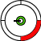

- 1 Red Light: This is a severe hardware failure. Complete mainboard and system diagnostics are required to determine the root cause
- 2 Red Light: This is commonly caused due to the system over heating. Verify sufficient ventilation of the console. If the problem persists then a diagnostics will need to be performed.
- 3 Red Light: Known as the Red Ring of Death! This is a general hardware failure and will need a complete diagnostics performed to see which piece of hardware needs to be replaced.
- 4 Red Light: The AV cable cannot be detected. Verify proper connection. Try a new cable if available. If the problem persists then a diagnostics would be needed.
- E65 DVD Drive Error
- E67 Hard Drive Error
- E74 AV Cable Error
- E76 Dead Network Chip
Any of the above codes will require a full diagnostics to confirm and repair accordingly.